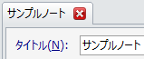
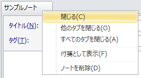

ノートを閉じる
ノートが終わったらノートを閉じましょう。 ノートを閉じるには主に二通りの方法があります。
タブ上の「閉じる」アイコンをクリックする
マウスカーソルをタブ上に移動するとタブ上にバツ印の「閉じる」アイコンが表示されます。 「閉じる」アイコンをクリックすると，ノートを閉じることができます。

タブを右クリックしてコンテキストメニューで「閉じる」を選択する
タブを右クリックしてコンテキストメニューで「閉じる」を選択すると，ノートを閉じることができます。 メニューからは「他のタブをすべて閉じる」や「すべてのタブを閉じる」を選択して， 一度に複数のタブを閉じることもできます。
